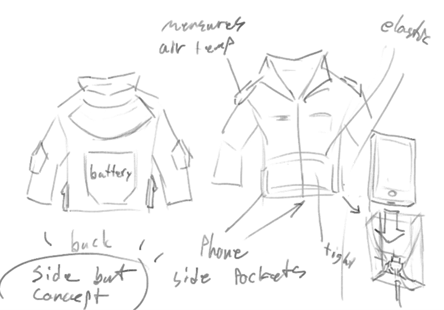

Goliath:
Goliath’s purpose and functionality:
Goliath is a cutting-edge garment designed to seamlessly integrate technology and fashion for an enhanced health monitoring experience. This early physical prototype version showcases an enormous amount of features aimed at empowering users to track their vital signs conveniently and effortlessly.
The primary purpose of Goliath is to provide users with real-time insight into their health parameters while also offering the functionality of a normal jacket. By combining with the current technology, the jacket allows us to gain a way to monitor and manage our well-being. The jacket is equipped with multiple sensors as well as hi-fi tools to monitor and calculate the body vitals. Firstly, it measures both inside and outside body temperature, making sure users are aware of the current environment they are in as well as their inner temperature. Heat and moisture sensors discreetly integrated into the armpits accurately capture perspiration and body temperature data, while an external digital thermometer provides information about the surrounding temperature.
Additionally, the jacket also provides heart and breath rates tracking. By utilizing a cuff oximeter, which is also located at the jacket’s cuff, it accurately measures breath rate, providing valuable insights into respiratory patterns. Moreover, heart rate is monitored through a sensor embedded in the wrist area, allowing users to keep a close watch on their cardiovascular health.
Furthermore, the jacket also doesn’t stop at monitoring alone. It takes health care to the next level by initiating blood pressure tests. Using a specially designed cuff around the wrist, the jacket tightens upon request through the connected app, facilitating accurate blood pressure measurements. Results can then be seamlessly transferred to the user's phone through Bluetooth or a wired connection, enabling easy tracking and analysis.
Moreover, to ensure the jacket remains practical and convenient, it features ports that allow for phone connectivity and charging. These ports serve a dual purpose, allowing users to plug in their phones to access the user interface, while also enabling the jacket itself to charge the connected phone or utilize an external battery for extended usage.
Last but not least, the jacket also prioritizes safety by incorporating an emergency response feature. If the user's heart rate drops to zero or detects an abnormality, the jacket prompts the user if they require emergency medical services (EMS). In the absence of a response, the jacket automatically sends distress signals to EMS, providing crucial assistance when it matters most. Speaking of allowing the app to call EMS, the app also enables communication by allowing text and call functionalities through the integrated headphone port, ensuring users can stay connected while on the move.
Sketch and early design exploration for the physical model
Feedback:
“The idea of having multiple functions on a jacket is really innovative and has a lot of potential, but I think it might be overwhelming for me to have so many functions in one piece of clothes, and the jacket might end up being bulky or kinda uncomfortable to wear” - Yash A. “The safety feature where it can call EMS automatically if the vitals are at a dangerous point and there is no response after multiple pings is a really good idea for the jacket. However, I think you should give more clear instructions so that there will be no false alarm or unnecessary use of emergency services. Also, personally, I would like to have more control over when and how to contact emergency” - Mark C.
Comprehensive design justification:
feedback:
Based on the feedback, we realized that while the concept of a multifunctional jacket with various sensors and features is promising, it is important and crucial to consider the seamless integration of these features and the overall user experience. Furthermore, the real challenge lies in ensuring that the jacket remains comfortable, practical, and easy to use even with multiple functions. It is also important to pay attention to the placement of the sensors, ports, controls, etc when designing the physical prototype so that it does not hinder the jacket’s functionality or become troublesome for the user.
practicality:
The team has to consider whether all the proposed features are necessary for the target audience and if they align with user needs and preferences. This evaluation can help refine the design and prioritize the most relevant and impactful features, ensuring the jacket meets user expectations and provides genuine value. With this in mind, we decided to show the most important data in the same place and users will be able to see it easily, regardless of their “tech knowledge”.
Result:
based on the information above, the team will lessen the amount of physical objects on the jacket as much as possible while retaining the same functionalities promised. Exp: from having a battery in the back, we decided to put it in the same spot as a pocket so the users will not feel uncomfortable due to the battery behind and can keep interacting with their back. On top of that, we decided to have bluetooth in the app so i can function with whatever headphone the user is wearing instead of having an extra earphone connecting to the jacket itself.
UI:
The team agreed on having an app as a support base due to it being the best answer to being able to receive text messenger and answer phone calls. Since we decided that the jacket connects with a phone app, it's essential to consider the user interface (UI) and ensure it is intuitive, user-friendly, and accessible. Firstly, the app should present data and results in a clear and understandable manner, making it easy for users to interpret and track their health information. Secondly, consider users with varying levels of technical proficiency and design the app interface accordingly. And lastly, considering the fact that the app is a support software, making it too complicated will result in problems.
Result:
We were able to pick a simple design where there will not be many options and complicated interactions. Exp: we will show immediately if the jacket and bluetooth are connected or not and the battery’s life on the home screen. Instead of splitting heart rate, breath rate, outside and inside temperature, we determined that the user will not want to go through troubles of multiple screen to see their data, so we keep everything in the same tab, called “body vitals”, while blood pressure needs to be in a separate tab because user have to activate the measure button for it to start measuring. sers having problems understanding how to use and read the data properly.
About data and privacy security:
Since the jacket is able to measure personal health data with the app, it is vital to prioritize privacy and security. Users will definitely have concerns about the collection, storage, and potential misuse of their sensitive health information.
Result:
Since we are not fully focused on developing the fully functional app, this is not our current concern.
Limitation:
due to most functions will be measured by a tool that is embedded on the jacket’s cuff, and the data will be fed into the app after. So the only option to view the vitals data is through the app.